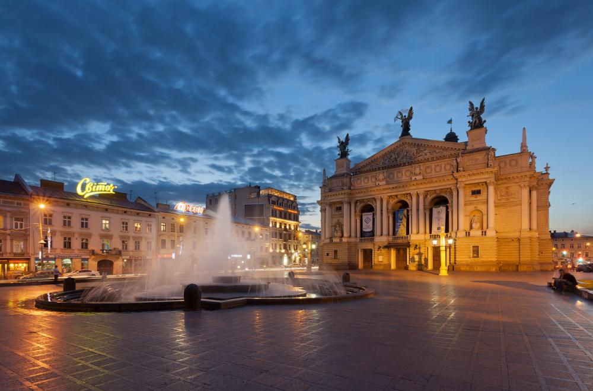
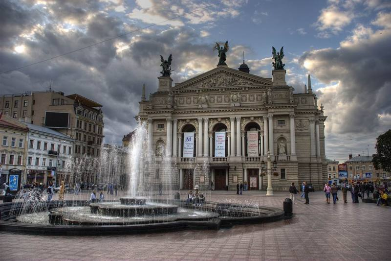
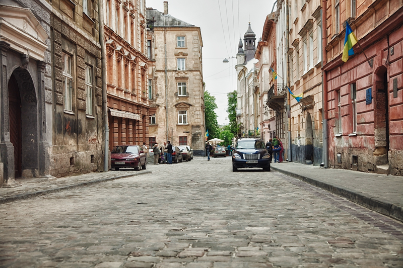
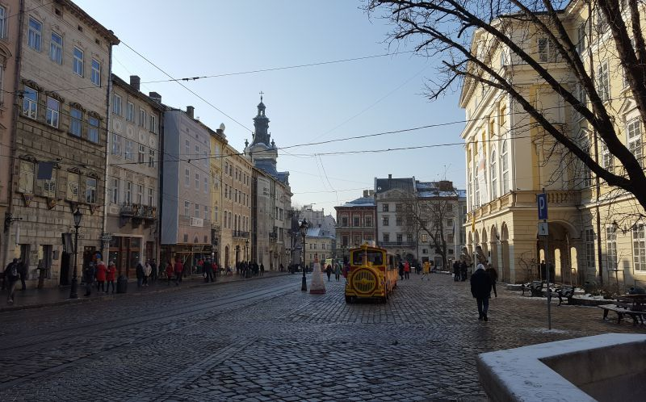
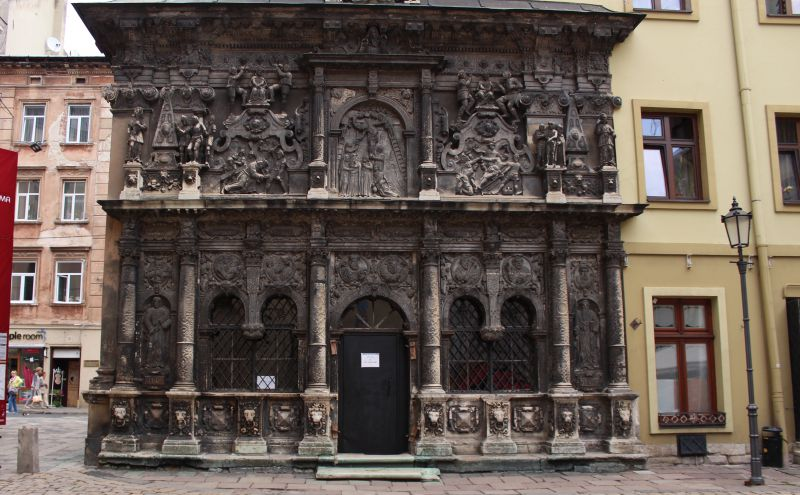
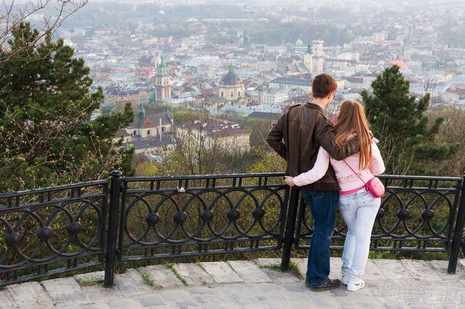

Західна туристична столиця України – Львів – уже багато років зустрічає гостей із різних куточків країни та з-за кордону. Здається, що в місті кожен будинок, квартал, провулок дихають історією. Вони зберігають пам'ять про те, що сталося багато століть тому. Це і створює неповторний шарм, яким милуються туристи, ледь ступивши на львівську землю.

Львівська опера
Львівський національний академічний театр опери та балету імені Соломії Крушельницької — театр опери і балету у Львові, розташований в історичному центрі міста на проспекті Свободи, 28 та названий на честь відомої української оперної співачки Соломії Крушельницької.

Вірменський квартал
Одним з найстаріших кварталів старовинного міста Львів є Вірменський. Громада століттями створювала у місті центр національної культури та архітектурні надбання з їх духовним християнським змістом.




Площа Ринок
Найвідоміша площа Львова – площа Ринок. Розташована в центрі, в старій частині міста. Тому тут є на що подивитися, адже тутешні будиночки ще пам'ятають події минулих століть. Будувати за часів середньовіччя на площі Ринок мали право тільки представники знаті. Перші згадки про центральну міську площу датуються далеким 13 століттям. Багато віків вона була центром життя міста. Тут влаштовували культурні заходи, процесії, продавали на ринку овочі, фрукти і квіти, які вирощували місцеві жителі.
Каплиця Боїмів
була зведена ще в 17 столітті на місці старого кладовища. Вона стала усипальницею для давнього угорського роду Боїмів. Хто сконструював цей справжній витвір мистецтва, достеменно не відомо. Проте знавці порівнюють львівську каплицю з усипальницею в краківському Вавелі. Більше аналогів каплиці Боїмів у Європі немає.У 18 столітті поховання з усипальниці були перенесені на місцевий цвинтар. А сама споруда стала суспільним надбанням. 1968 року каплицю зробили відділом Львівської національної галереї мистецтв імені Бориса Возницького. З тих пір усі охочі можуть оглянути дуже красиву сакральну споруду не тільки зовні, але і всередині.
Гора «Високий замок»
Бути у Львові і не відвідати Високий замок – це як у Києві навіть мигцем не побачити Хрещатик. Є найвищою точкою міста Лева. Висота гори – 413 метрів. Колись на ній височів замок. Забудовувати гору почали ще в 13 столітті. Коли замок перебудували і його стало добре помітно з навколишніх територій, то гору почали називати Замковою, або «Високим замком».